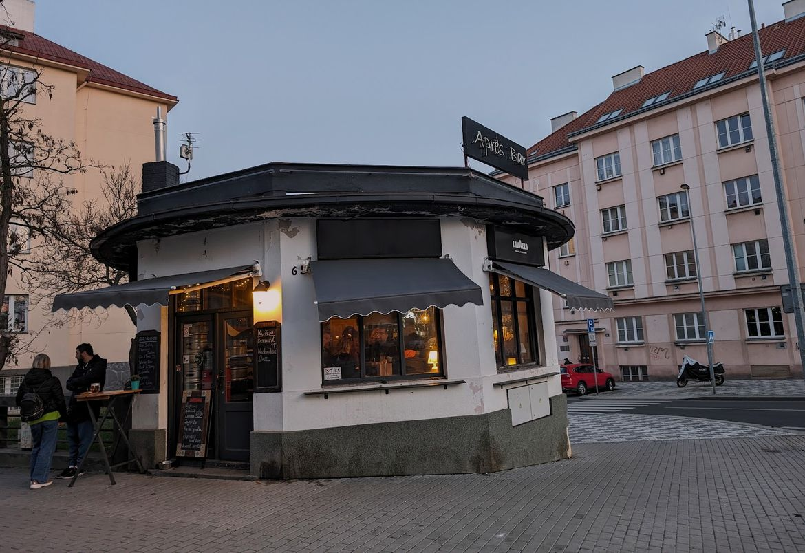
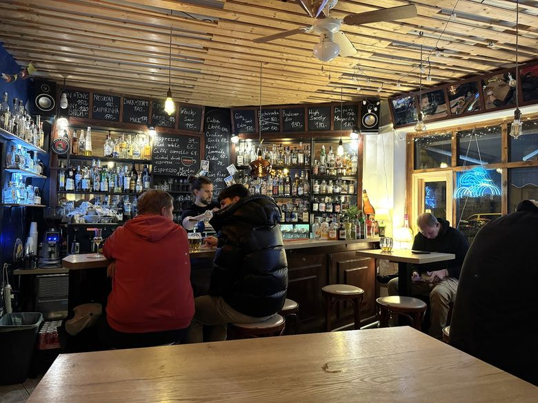
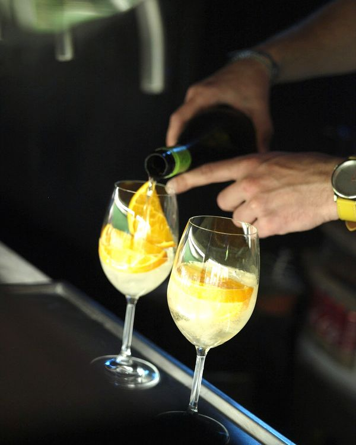
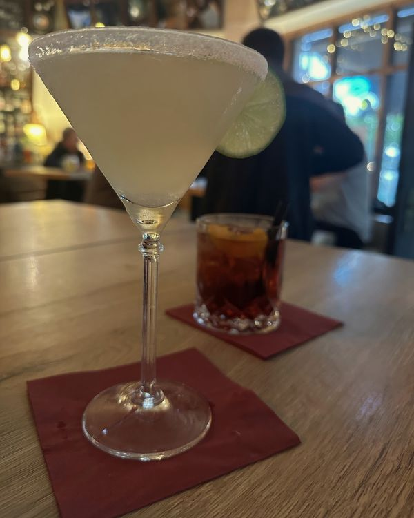
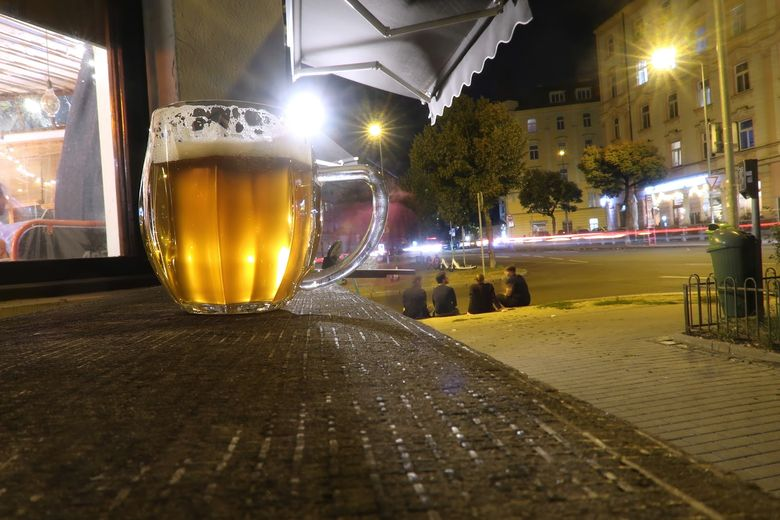

Pondělí až sobotaod 17:00 do půlnoci
Après Bar
Malý bar na Kodaňské ve Vršovicích, 4,9 z 213 recenzí na Googlu.

Rezervace na 773 821 632.
Co nalejeme
Na pípě
| Pivo a nealko | velké | malé |
|---|---|---|
| Bernard ležák 11° | 56 Kč | 41 Kč |
| Bernard Grep Free, nealko | 58 Kč | 44 Kč |
| Vršovický sifon, soda | 30 Kč | 20 Kč |
Na dalších pípách se točí, co je zrovna naražené.
Koktejly
- Crodino Spritz, nealko69 Kč
- Aperol Spritz129 Kč
- Skinny Bitch130 Kč
- Gin & Tonic150 Kč
- Becherovka Sour160 Kč
- Gin & Tonic Extra170 Kč
- Caipirinha170 Kč
- Cuba Libre170 Kč
- Daiquiri170 Kč
- Dark & Stormy170 Kč
- Espresso Martini170 Kč
- Mule170 Kč
- Rum Sour170 Kč
- Boulevardier180 Kč
- High Society180 Kč
- Margarita180 Kč
- Negroni180 Kč
- Whisky Sour195 Kč
Káva
- Espresso65 Kč
- Flat white69 Kč
- Caffè corretto, espresso s panákem69 Kč
K tomu rumy, giny, whisky a české pálenky podle toho, co je zrovna na polici. Víno podle tabule.



Z recenzí
Půlka kouzla spočívá v tom, že je tu tak málo místa, že si k někomu musíte přisednout. Mají dobrou nabídku drinků a ohromný výběr tvrdého alkoholu, čepují několik druhů piv včetně nealko piva. Vždycky milá obsluha.
Ladislav, Google
Skvělá atmosféra, příjemná obsluha, bar, kam se ráda budu vracet.
Veronika, Google
Top bar na Kodaňské, útulná atmosféra a patrně bezkonkurenční výběr pálenek široko daleko.
Jiří, Google
Velmi útulný bar s dobrým pivem. Sem budeme chodit rádi!
Lukáš, Google
Kdy přijít
- Pondělí17:00–24:00
- Úterý17:00–24:00
- Středa17:00–24:00
- Čtvrtek17:00–24:00
- Pátek17:00–24:00
- Sobota17:00–24:00
- Nedělezavřeno
Kodaňská 65, Praha 10-Vršovice. Bílý domeček na rohu, u hodin.
Rezervace a dotazy: 773 821 632
Sedí se i venku, platí se i kartou a psi můžou dovnitř.
